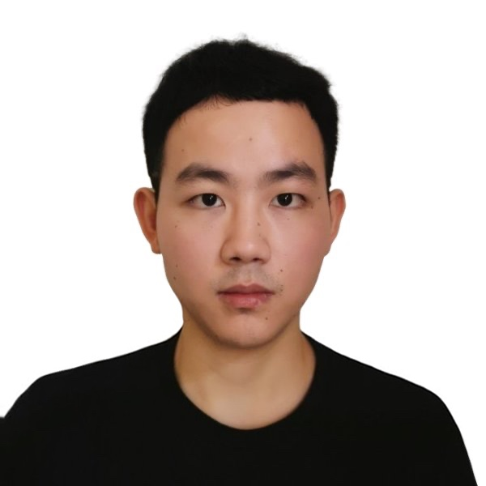

Min Shi
PhD in Computer Science, Florida Atlantic University, FL, USACurrent: Postdoctoral Fellow, Washington University in St. Louis, MO, USA
Phone: (+1) 561-563-2509
Email: toshimin132@gmail.com
Short Bio (CV)
I am currently a Postdoctoral Research Associate of the Department of Genetics at Washington University School of Medicine in St.Louis, Missouri, USA. I received my Ph.D. in Computer and Information Sciences from the Florida Atlantic University (FAU) in 2020. My research interests include machine learning, data mining and bioinformatics. Currently, my research focuses on developing machine learning and graph learning theory and algorithms for addressing critical challenges such as graph embedding learning, biological network modeling, single cell RNA-seq data mining, etc. During the recent years, I am particularly interested in the interdisciplinary research integrating computer science and fundamental biology to advance both fields. One of my ongoing research projects is to understand the dynamic epigenetic microenvironment in breast cancer using machine learning from the integrated multiple omics data.
Experience
- Aug 2020 - present: Postdoctoral Fellow
- School of Medicine, Washington University in St. Louis, MO, USA
- Supervisor: Dr. Shamim Mollah
- Jan 2018 - Aug 2020: Ph.D.
- Computer and Information Sciences, Florida Atlantic University, FL, USA
- Supervisors: Dr. Yufei Tang, Dr. Xingquan Zhu
- Jun 2017 - Jan 2018: Research Assistant
- School of Computer Science and Engineering, Hunan University of Science and Technology, Hunan, China
- Supervisor: Dr. Jianxun Liu
- Sep 2014 - Jun 2017: M.S.
- Software Engineering, Hunan University of Science and Technology, Hunan, China
- Supervisor: Prof. Jianxun Liu
- Sep 2010 - Jun 2014: B.S.
- Software Engineering, Yangtze University, Hubei, China
Recent News
- [Aug 2021] One paper was accepted by IEEE Transactions on Services Computing
- [Jul 2021] One paper was accepted by Blood Advances.
- [May 2021] One paper was accepted by IEEE Transactions on Neural Networks and Learning Systems.
- [Apr 2021] One paper was accepted by IJCAI 2021.
See More
- [Jul 2020] One paper was accepted by IEEE Transactions on Big Data.
- [Apr 2020] One paper was accepted by IJCAI 2020.
Awards & Honors
- Research Assistant of the Year at Florida Atlantic University 2020.
- IEEE SCC Best Student Conference Paper on Services Computing 2019.
- Best Master Dissertation of Hunan Province 2019.
- HNUST Excellent Graduate Student Award 2017.
- Second Prize in National Graduate Mathematical Contest in Modelling 2017.
- First Prize in National Graduate Mathematical Contest in Modelling 2016.
- Excellent Undergraduate Student Award 2014.